3 Ollama 自定义导入模型
3.1 简介
本节学习如何使用 Modelfile 来自定义导入模型，主要分为以下几个部分:
- 从 GGUF 导入
- 从 Pytorch 或 Safetensors 导入
- 由模型直接导入
- 自定义 Prompt
3.2 从 GGUF 导入
GGUF 本质上是一种“为了本地跑大模型而设计的模型文件格式”。它的目标不是训练，而是让一个已经训练好的大语言模型，能被非常方便、稳定地在不同机器、不同操作系统、不同硬件环境上拿来直接推理使用。你可以把 GGUF 理解成一个“自带说明书的模型文件”，模型的权重、结构信息、词表、上下文长度、量化方式等关键内容，全都直接写在这个文件里。这样一来，推理工具只需要读取这个文件，就知道这个模型该怎么跑，而不需要再额外配置一堆参数或依赖特定代码。
在 GGUF 出现之前，主流使用的是 GGML。GGML 一开始并不只是一个文件格式，它更像是一个轻量级的张量计算库，顺带定义了一种模型存储方式，主要目的是让大模型能在 CPU 上跑起来，而且尽量做到单文件、无依赖、跨架构。这在早期非常成功，但随着模型结构越来越复杂、量化方式越来越多，GGML 的问题也逐渐暴露出来。最大的问题在于模型格式和代码耦合得太紧，很多模型的结构信息、量化细节其实是“写死在代码里的”，文件本身并不能完整说明自己是什么模型、该如何被正确加载。这导致一旦模型架构变化、量化方案升级，就需要频繁改代码，兼容性和维护成本迅速上升。
GGUF 可以理解为对 GGML 的一次“彻底整理和升级”。它做了一件很关键的事情，就是把“模型是什么”这件事，从代码里抽离出来，明确地、结构化地写进模型文件本身。也就是说，GGUF 文件不仅保存权重，还清楚地描述了模型的结构参数、使用了哪种量化方式、每一层该如何解释、推理时需要注意哪些信息。这样模型文件本身就变成了一个完整、自描述的实体，推理框架只负责执行，不再需要靠一堆隐含约定。
这也是为什么现在本地推理生态，比如 llama.cpp、Ollama、LM Studio 这一整条链路，几乎都围绕 GGUF 来展开。因为它非常符合现实需求：单文件、好分发、跨平台、对 CPU、GPU、Apple Silicon、Metal 都友好，而且量化支持非常成熟。你拿到一个 GGUF 文件，放到任意支持 GGUF 的工具里，基本就能直接跑，不用关心这个模型原来是在哪个框架训练的、权重是怎么拆分的。
Ollama 支持从 GGUF 文件导入模型，通过以下步骤来实现：
- 下载
.gguf文件
为了演示的方便，我们选用了 Qwen2-0.5B 模型。下载后可以得到这个文件：Qwen2-0.5B.Q3_K_M.gguf
如果链接下载不了，可以参考：https://pan.quark.cn/s/69a0423c4ac4
- 新建创建 Modelfile 文件
该文件具体建立在哪，随便。可以在方便的位置创建一个文件夹，比如mymodel，然后将下载好的.gguf文件放在mymodel文件夹里面，再在mymodel里面创建Modelfile文件。Modelfile文件里的内容如下：
FROM ./Qwen2-0.5B.Q3_K_M.gguf具体怎么创建Modelfile：
# 1
touch Modelfile
# 2
vim Modelfile
# 3
将`FROM ./Qwen2-0.5B.Q3_K_M.gguf`复制到Modelfile内。
# 4
`Ecs`,':wq'保存退出。- 在 Ollama 中创建模型
[!NOTE]
一定是在 Modelfile 文件所在的目录下运行以下终端指令！
之后的操作要进入mymodel目录下，也就是说ls命令返回的是Modelfile、Qwen2-0.5B.Q3_K_M.gguf这两个文件名。
创建（注册）Ollama 模型（只做一次）：
ollama create mymodel -f Modelfile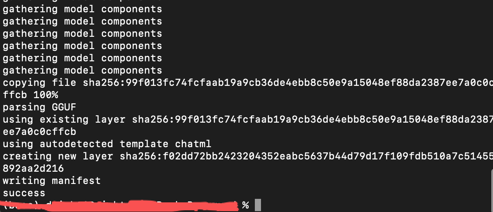
看到没报错，即表示： Ollama 已成功读取 .gguf 并注册模型
之后运行模型：
ollama run mymodel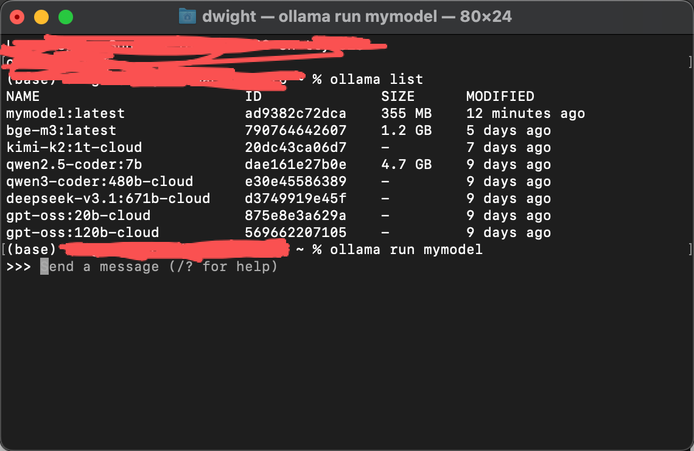
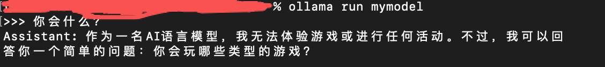
模型很小，不是很智能。
3.3 从 Pytorch 或 Safetensors 导入
Safetensors 是一种用于存储深度学习模型权重的安全、高效文件格式，已广泛用于模型训练与分发。但需要注意的是，Safetensors 本身并非为本地推理场景设计的运行格式。
截至 2026 年 1 月，Ollama 仍未对 Safetensors 提供官方、稳定的直接支持。通过 Safetensors 导入模型到 Ollama 仍属于社区探索阶段的实验性用法，相关文档和成功案例有限，不适合作为推荐的主流方案。
在模型结构标准、未使用特殊量化方案的前提下，部分 causal decoder 架构模型可尝试通过 Modelfile 直接引用 Safetensors 权重，例如 LlamaForCausalLM、MistralForCausalLM、GemmaForCausalLM 等。但该方式对模型一致性和环境要求较高，成功率不稳定。
以下情况不适合直接使用 Safetensors 导入 Ollama：基于 bitsandbytes 的 4bit 或 8bit 量化模型，GPTQ、AWQ 等第三方量化权重，以及非 causal decoder 架构模型。在这些情况下，推荐先将模型转换为 GGUF 格式再使用。
总体而言，GGUF 仍是 Ollama 与本地推理生态中最稳定、最可控的模型格式。Safetensors 直接导入路径应仅用于实验或研究用途，并做好失败和回退的准备。
(对于上述情况，推荐将模型转换为 GGUF 格式后再使用 Ollama。)
由于这部分内容社区还在不断优化中，因此，这里提供的示例代码和流程仅供参考，并不保证能成功运行。详情请参考官方文档。
- 下载 llama-3 模型
!pip install huggingface_hub# 下载模型
from huggingface_hub import snapshot_download
model_id = "unsloth/llama-3-8b-bnb-4bit"
snapshot_download(
repo_id=model_id,
local_dir="llama-3-8b-bnb-4bit",
local_dir_use_symlinks=False,
revision="main",
# 怎么获取<YOUR_ACCESS_TOKEN>，请参照部分3
use_auth_token="<YOUR_ACCESS_TOKEN>")local_dir：把仓库快照放到你本地的哪个目录。不指定时， 默认只放在 HF cache 里，路径深且不直观，这是你之后“直接操作文件”的工作目录，例如给 llama.cpp / 转 GGUF 用。
local_dir_use_symlinks：是否使用符号链接（软链接），默认是 True。
revision：指定你要下载的分支，tag 或 commit hash。
use_auth_token：使用你的 Hugging Face 访问凭证
- 根目录下创建 Modelfile 文件，内容如下：
FROM ./llama-3-8b-bnb-4bit- 在 Ollama 中创建模型
ollama create mymodel2 -f Modelfile- 运行模型
ollama run mymodel2huggingface_hub能用，但不稳定（慢），且有明显前提条件。更稳妥的做法是，要么使用 Hugging Face 镜像站点，要么绕过 huggingface_hub，直接使用已转换好的 GGUF 模型，或者通过国内可访问的模型分发渠道获取权重。
3.3.1 实验方案：通过镜像网站 + Safetensors → Ollama（不推荐，仅用于探索）
1 环境准备
假设已经有了虚拟环境了且切换到了该虚拟环境，终端输入：
pip install huggingface_hub
然后终端输入（针对macOS）：
export HF_ENDPOINT=https://hf-mirror.com
（针对Windows PowerShell：$env:HF_ENDPOINT="https://hf-mirror.com")
这一步非常关键，只要设了这个变量，huggingface_hub 的所有下载请求都会自动走 hf-mirror（镜像网站，如果需要acess_token，需要去官网申请）。
2 核心代码
from huggingface_hub import snapshot_download
model_id = "unsloth/llama-3-8b-bnb-4bit"
snapshot_download(
repo_id=model_id,
local_dir="./llama-3-8b-bnb-4bit",
local_dir_use_symlinks=False,
revision="main",
)在该虚拟环境中执行上述代码，如下图：
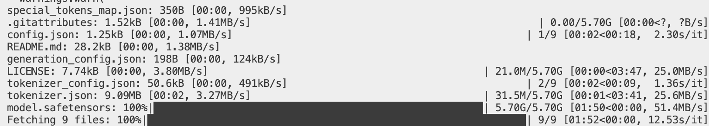
安装完毕后，当前目录下会出现该模型llama-3-8b-bnb-4bit 的文件夹。
有了模型之后，按照前述四步依次操作。
3 结果
8GB内存的电脑下载两个5GB左右的模型，再开ollama就很卡了。
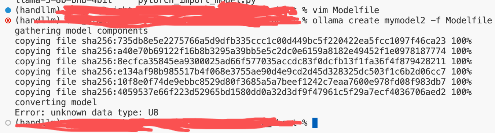
Safetensors 因为 dtype 不兼容而无法导入 Ollama。
这是一个非常好的“为什么不推荐这条路”的真实证据。
3.4 由模型直接导入
正常来说，我们在 HuggingFace 接触到的模型文件非常之多，庆幸的是，hf 提供了非常便捷的 API 来下载和处理这些模型，像上面那样直接下载受限于网络环境，速度非常慢，这一小段我们来使用脚本以及 hf 来完成。
llama.cpp 是 GGUF 的开源项目，提供 CLI 和 Server 功能。
对于不能通过 Ollama 直接转换的架构，我们可以使用 llama.cpp 进行量化，并将其转换为 GGUF 格式，再按照第一种方式进行导入。
我们整个转换的过程分为以下几步：
- 从 huggingface 上下载 model；
- 使用 llama.cpp 来进行转化；
- 使用 llama.cpp 来进行模型量化；
- 运行并上传模型。
3.4.1 如何获得ACCESS_TOKEN
最直接的下载方式是通过git clone或者链接来下载，但是因为llm每部分都按GB计算，避免出现 OOM Error(Out of memory)，我们可以使用 Python 写一个简单的 download.py。
首先应该去hf拿到用户个人的 ACCESS_TOKEN，打开 huggingface 个人设置页面。
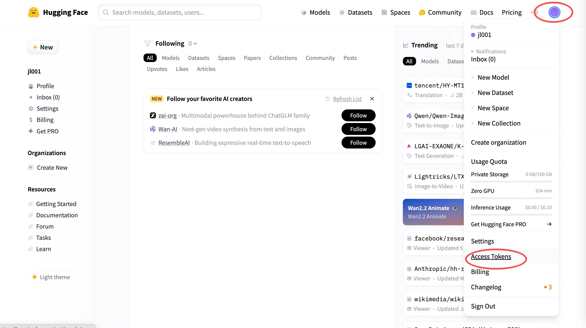
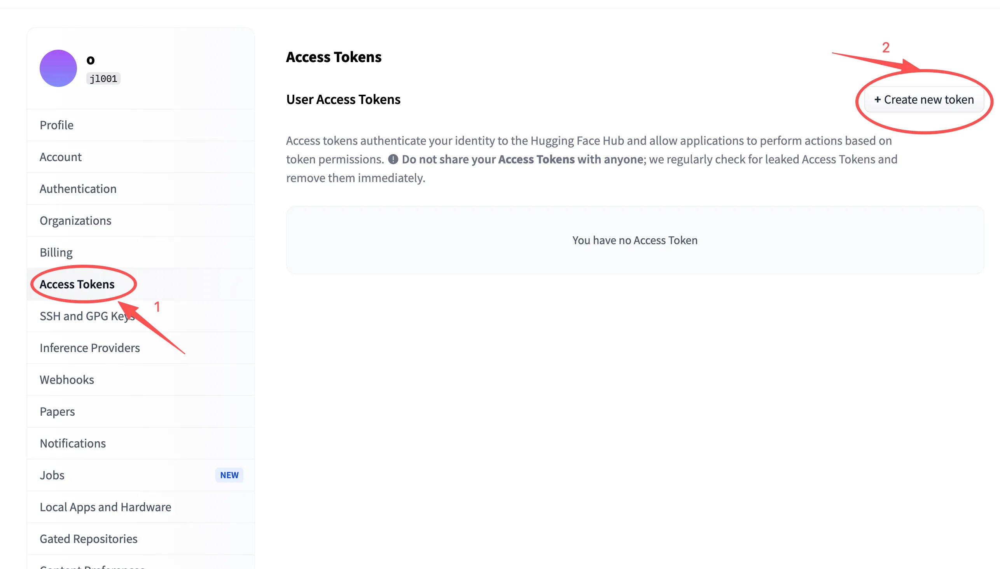
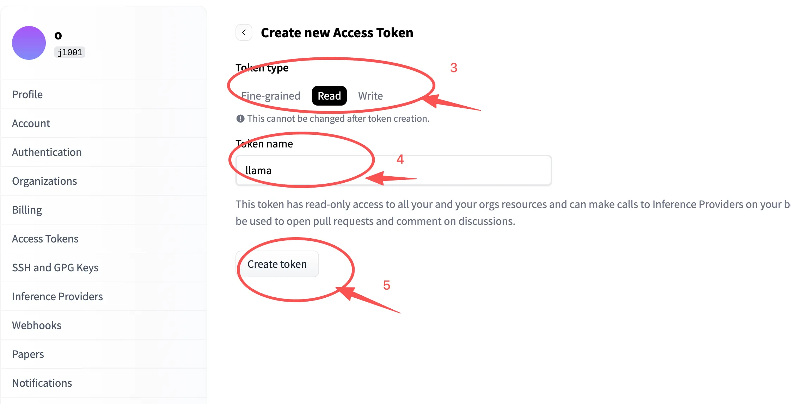
Read的权限是读取（下载模型、权重、config）。
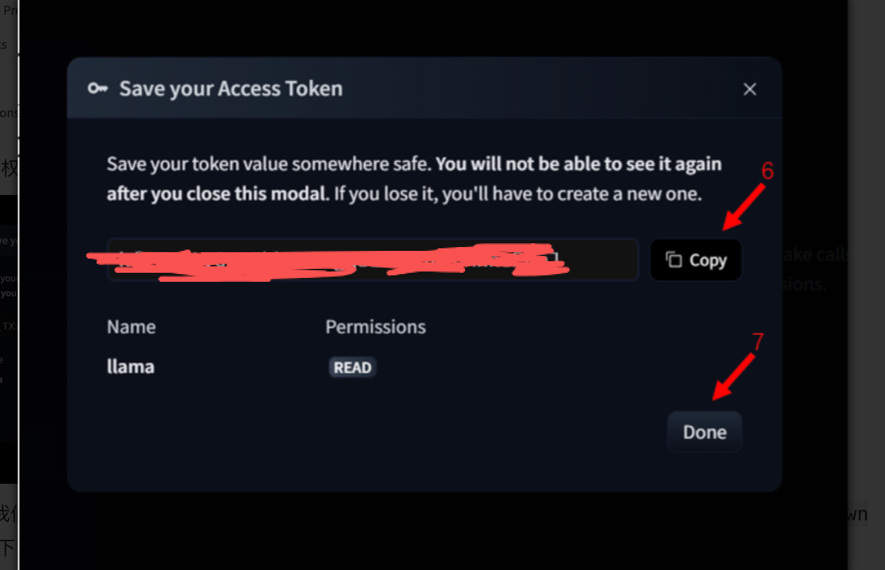
至此，我们就拿到了一个 ACCESS_TOKEN 。
转换的过程中主要问题在于llama.cpp的配置，需要安装该文件夹下requirements.txt 中的依赖。遇到各种问题，官方从pip wheel 侧对 macOS x86_64 的支持在 2.2.2 左右就停止了，所以用 pip 在 Intel Mac 上通常只能看到并安装到 2.2.2；更高版本（包括 2.6）没有对应的 macOS x86_64 wheel，于是就会出现“找不到分发包/不支持该 wheel”的各种报错。
如果用低版本的torch，报错：AttributeError: module 'torch' has no attribute 'uint64
至于下载模型可以直接配置上述镜像网站加快下载速度。
理论上来说，只要配置好llama.cpp运行convert_hf_to_gguf.py 就可以将hg上的模型转换成.gguf 文件，再执行前述”从GGUF导入”部分，即可导入模型。
ollama create -q Q4_K_M mymodel3 -f ./Modelfile
这行代码的意思是：基于 Modelfile 创建一个新的 Ollama 模型，并在创建过程中指定使用 Q4_K_M 这种量化方式。
-q Q4_K_M是量化参数选项。
3.5 自定义 Prompt
Ollama 支持自定 义Prompt，可以让模型生成更符合用户需求的文本。
自定义 Prompt 的步骤如下：
- 在选定目录下创建一个 Modelfile 文件
FROM llama3.2:1b
# sets the temperature to 1 [higher is more creative, lower is more coherent]
PARAMETER temperature 1
# sets the context window size to 4096, this controls how many tokens the LLM can use as context to generate the next token
PARAMETER num_ctx 4096
# sets a custom system message to specify the behavior of the chat assistant
SYSTEM You are Mario from super mario bros, acting as an assistant.- 创建模型
ollama create mymodel -f ./Modelfile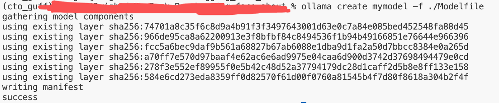
创建模型的时间可能稍微会久一点，和 pull 一个模型的时间差不多，请耐心等待。
如果模型已经下载过了，就会很快。
再次运行 ollama list 查看已有的模型，可以看到 mymodel 已经正确创建了。
NAME ID SIZE MODIFIED
mymodel:latest 983aa9fd465d 1.3 GB 2 minutes ago
llama3.2:1b baf6a787fdff 1.3 GB 5 minutes ago
bge-m3:latest 790764642607 1.2 GB 5 days ago
kimi-k2:1t-cloud 20dc43ca06d7 - 7 days ago
qwen2.5-coder:7b dae161e27b0e 4.7 GB 9 days ago
qwen3-coder:480b-cloud e30e45586389 - 9 days ago
deepseek-v3.1:671b-cloud d3749919e45f - 9 days ago
gpt-oss:20b-cloud 875e8e3a629a - 9 days ago
gpt-oss:120b-cloud 569662207105 - 9 days ago- 运行模型
ollama run mymodel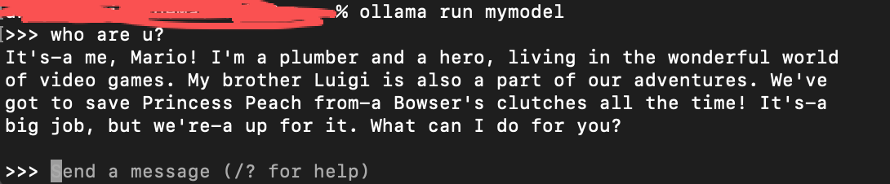
可以看到，我们的小羊驼 🦙 已经变成了 Mario！自定义 Prompt 成功！😘😘
注意：8GB内存的电脑，本地模型下载上述4个已经比较卡了。
参考链接